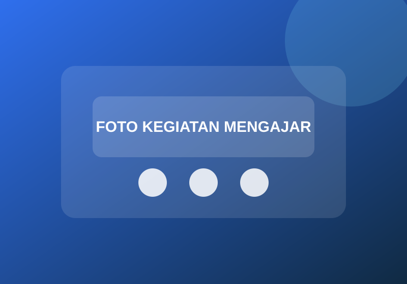
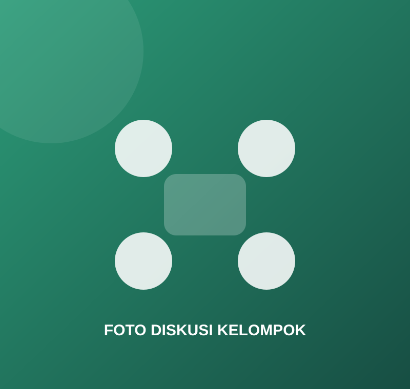
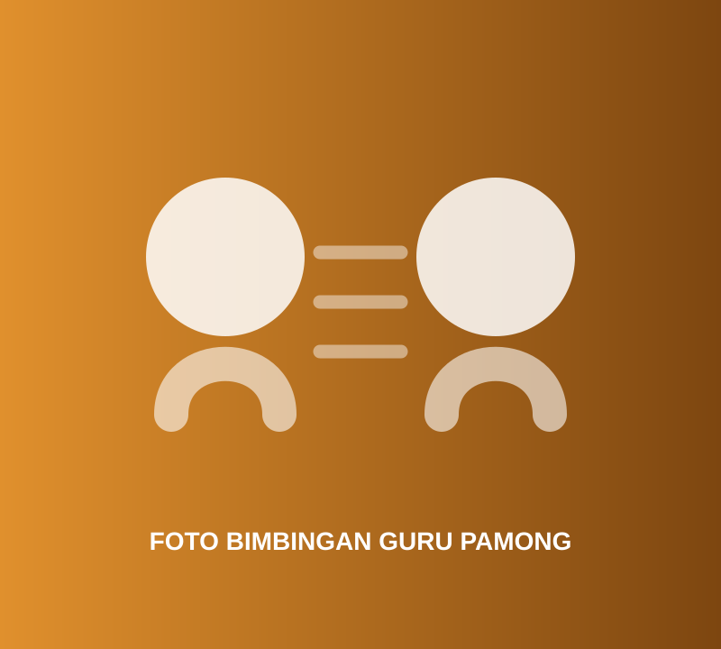

Lembar Penilaian Perangkat Pembelajaran
Penilaian kualitas perencanaan dan perangkat pembelajaran.
TAUTAN BELUM DILAMPIRKANKumpulan lembar penilaian, sertifikat, dan dokumentasi yang melengkapi bukti perjalanan PPG.
Ganti nilai src dan href setelah tautan Google Drive tersedia.
Penilaian kualitas perencanaan dan perangkat pembelajaran.
TAUTAN BELUM DILAMPIRKANPenilaian observasi pelaksanaan pembelajaran di kelas.
TAUTAN BELUM DILAMPIRKANFoto memakai lazy loading dan dapat diganti langsung melalui folder assets/images.






Tambahkan penyelenggara dan tahun.
Tambahkan penyelenggara dan tahun.
Tambahkan penyelenggara dan tahun.